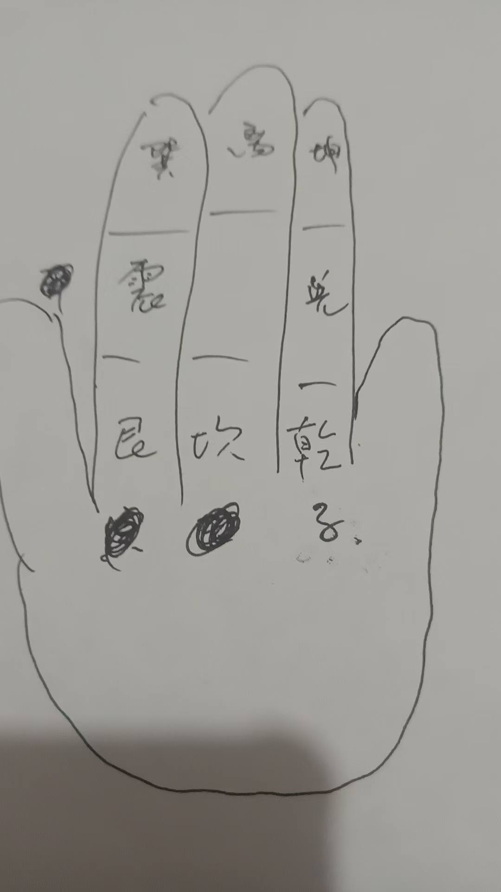

20251016四神将护身 夜行害怕念咒
修炼修行道家 原始对话记录
咒，青龙居我左，拇指点食指中节
白虎是侍我右拇指点无名指中间
朱雀护我前拇指点中指顶节
玄武立我后拇指点中指底节
四方四神将拇指点中指中节
将我元神护拇指点无名指指根
吾奉太上老君急急如律令
边念咒边点念到急急如律令后，四指迅速握住大拇指即可，此法随时可以用作护身
念咒的同时观想四神兽
掐 左右手都可以
夜行害怕念咒 ，阿弥陀佛大如天，八大金刚站两边，前后都有金刚护，哪有恶鬼敢傍边，吾奉太上老君急急如律令
以下为编者整理的主题文章
编者整理 · 主题文章
四神将护身法：夜行不惧的护身咒与手诀
一句话结论：四神将护身法以拇指在四指关节按压，分别对应青龙、白虎、朱雀、玄武四神，边念咒边点，念到"急急如律令"时四指迅速握住大拇指成诀，随时可作护身用；夜行害怕另有"阿弥陀佛大如天"护身咒。
一、一句话说清四神将护身法
这是一套随身的护身手诀：拇指依次按压四根手指的关节，每按一处对应一位神将，边念边点，念完后四指握住大拇指定诀。 传承记录强调它"此法随时可以用作护身"。
二、手诀与对应（左手右手皆可）
拇指按下去的位置，就对应一方的神将：
| 念到的神将 | 拇指按压位置 |
|---|---|
| 青龙居我左 | 拇指点食指中节 |
| 白虎侍我右 | 拇指点无名指中间 |
| 朱雀护我前 | 拇指点中指顶节 |
| 玄武立我后 | 拇指点中指底节 |
| 四方四神将 | 拇指点中指中节 |
| 将我元神护 | 拇指点无名指指根 |
三、完整咒语
青龙居我左，白虎侍我右，朱雀护我前，玄武立我后，四方四神将，将我元神护，吾奉太上老君急急如律令。
操作：边念咒边点，念到"急急如律令"后，四指迅速握住大拇指即可，随时可用作护身。念咒的同时观想四神兽。
四、夜行害怕的护身咒
走夜路、心里发怵时，另有一句护身咒：
阿弥陀佛大如天，八大金刚站两边，前后都有金刚护，哪有恶鬼敢傍边，吾奉太上老君急急如律令。
一遍一遍念，起到安神壮胆的作用。
五、这一类"护身法"的共性
- 手诀锁定自身：如握固诀（四指包拇指），意在"锁气、护身"；
- 咒语引神护持：念哪方神将，观想哪方神将现前；
- 随用随起：不需要复杂仪轨，随时可用。
道门"手印"体系里，这类护身诀与招请诀、加持诀并存，配合咒语与观想使用。
六、常见问题
问：左手还是右手？ 记录："掐，左右手都可以。"
问：按压要用力吗？ 不用猛力，拇指点到位、边念边点即可，重点在"念、点、观想"三者合一。
问：走夜路一定安全吗？ 这套咒诀的作用是安神、壮胆、收心。现实中的安全仍要靠提高警惕、结伴而行、遵守交通与治安常识，切勿因念咒放松对真实危险的防范。
七、提醒
- 手指与神将的对应关系要记牢，别点错位置；
- 念咒配观想，效果才"到位"；
- 安神归安神，人身安全始终以现实防范为准。
说明与免责：本站为民间修炼、民俗文化与传统文化资料的整理与记录，内容源自传承者口传与个人修习体会，仅供文化交流与研究参考，不构成医疗、健康、投资或任何功效承诺。所述内容属传统术数范畴，请理性看待；如身体不适，请及时就医。请遵守法律法规与公序良俗。